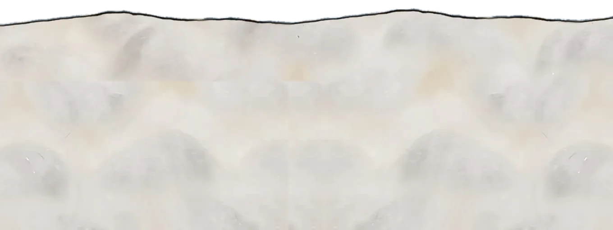
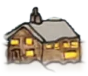
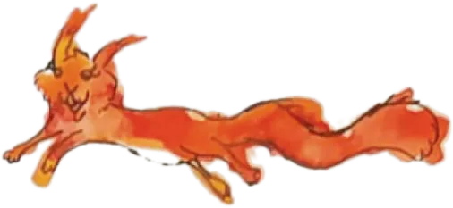
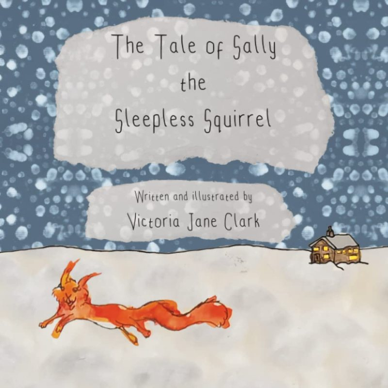
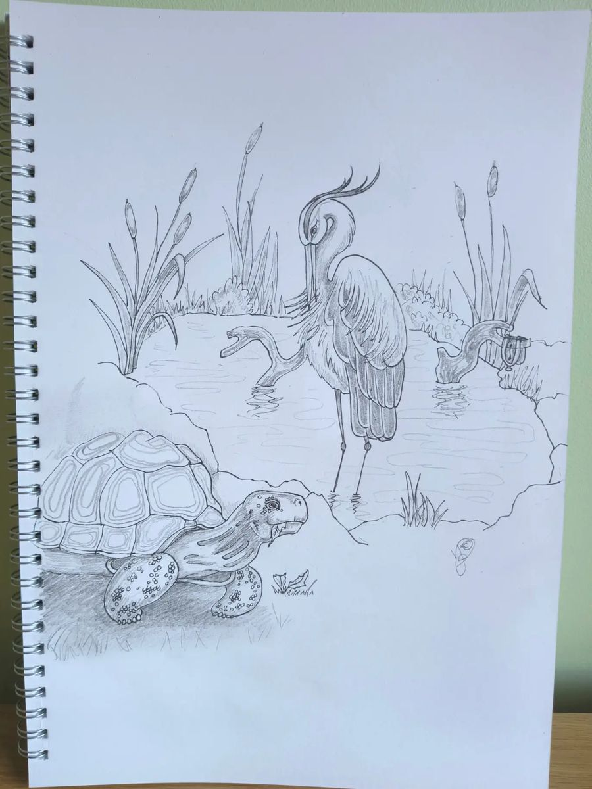
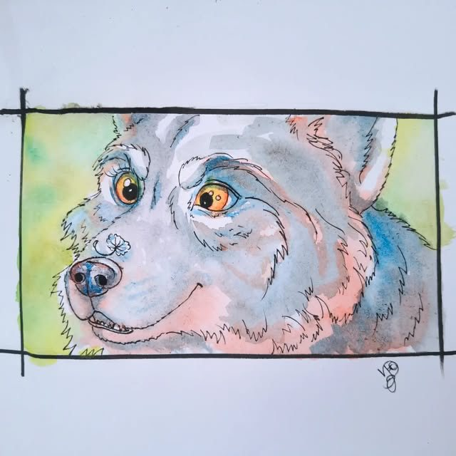

The Tale of Sally the Sleepless Squirrel
Written and illustrated by Victoria Jane Clark
Poor little Sally the Sleepless Squirrel is unable to hibernate.
Will she be able to find somewhere safe over Winter?
A tale of hope and love, of new families and joy.
The Tale of Sally the Sleepless Squirrel
Poor little Sally the Sleepless Squirrel is unable to hibernate. Will she be able to find somewhere safe over Winter?
A picture book about hope and love, new families and joy. Victoria wrote every word and drew every picture.
- FormatPaperback, 24 pages
- Reading age4 to 12
- PublisherLeschenault Press, 2023
- ISBN978-1923020061
From the sketchbook
Two of Victoria’s newest drawings, both posted on Instagram this November.


Victoria Jane Clark
Vicki grew up in Cambridgeshire and has loved art since she was small. She studied for a degree in Illustration, then a Master’s in Children’s Book Illustration, and she also holds a PGCE in Secondary English.
Her first book came after she volunteered on the Galapagos Islands, at an ecological park called Jatun Sacha. Back in the UK she ran her own creative arts business, and today she works full time as a graphic designer.
- The Fuzzy MonsterMaddox was bright and boisterous, until a mysterious illness threatened to take that away. Only his little sister, Tilda, knew the truth. A book about epilepsy for children and young teenagers, drawn from Victoria’s own experience.
- The Forgotten Treasure of the GalapagosIsabela discovers a world full of treasure worth more than rubies, diamonds or a pirate’s chest of gold. Her first book, from 2010.